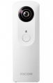

器材库 > 不可换镜头数码相机 > Theta

规格总览
发布日期
2015-04-16
厂家推荐价格
2,199.00 （人民币）
影像规格
影像传感器
CMOS
静态图像格式
JPEG（Exif 2.30）兼容, DCF 2.0 兼容
短片格式
MOV, MPEG4-AVC/H.264
镜头和对焦
最近对焦距离
10cm
AF辅助灯
无
手动对焦
不支持
曝光控制
曝光模式
Auto
快门速度
静态图片1/8000~1/7.5 视频1/8000~1/15
曝光补偿
±2EV以1/3EV级调整
ISO感光度
100, 1600
白平衡
白炽灯, 阴天, 荧光灯, 阴影, 自动, 户外, 荧光灯（日光白色）, 荧光灯（日光）, 荧光灯（暖白色）
闪光灯
内置闪光灯
无
文件输入/输出
内置存储容量
4G
数据接口
USB2.0, USB3.0 (micro B)
电源
电池
内置锂电池
续航能力
约200张静态图片
外观
颜色
黄色, 白色, 蓝色, 桃红色
尺寸
42x129x22.8mm
重量
95g
其它
GPS
无
工作温度
-20~60℃
软件
理光景达
该产品暂无存档的网友点评
产品图 / 样片
1
评测 / 相关文章
- ［试用］谈谈颠覆性的相机，Theta （存档）
- ［资讯］震撼360度新体验 RICOH THETA在京发布 （存档）
- ［资讯］四色炫彩全景相机 理光发布新THETA产品 （存档）
- ［资讯］理光THETA新机型一键捕捉360度画像 （存档）
- ［资讯］360度全景数码相机 理光Theta发布 （存档）